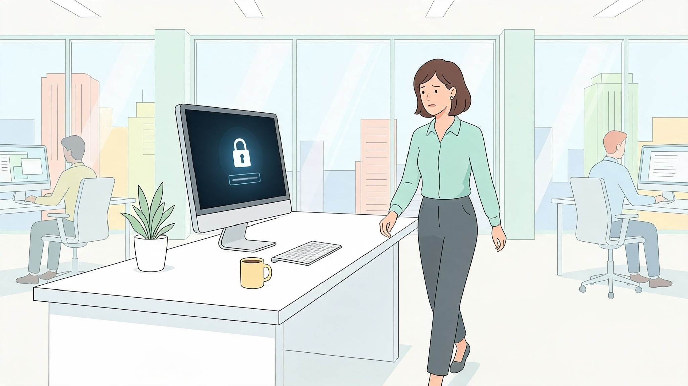

Um incidente de segurança é um evento confirmado ou suspeito que pode comprometer dados, contas, sistemas ou operações.
Nem sempre o usuário terá certeza de que existe uma infecção. A suspeita já pode ser suficiente para comunicar a equipe responsável.
Lentidão incomum, janelas inesperadas, programas desconhecidos, arquivos alterados, acessos em horários estranhos ou mensagens enviadas sem seu conhecimento podem indicar comprometimento.
Esses sinais precisam ser avaliados no contexto do ambiente.
Esconder um erro por medo ou vergonha pode aumentar o impacto do incidente.
Uma cultura de segurança madura incentiva o reporte rápido, porque a equipe técnica precisa de tempo para isolar o problema e evitar que ele se espalhe.
Se houver suspeita de comprometimento, siga o procedimento oficial da empresa. Em alguns cenários, o material do curso orienta desconectar a rede da máquina e evitar reiniciar o equipamento antes da análise técnica.
O ponto principal é agir rapidamente e acionar o canal oficial de incidentes.
Registre o horário, a mensagem recebida, o arquivo aberto, os alertas exibidos e qualquer comportamento incomum percebido.
Esses detalhes ajudam a equipe de segurança a reconstruir o que aconteceu.
Detectar é importante, mas comunicar rápido é essencial para reduzir o impacto.
Ao suspeitar que seu computador corporativo foi infectado ou que você clicou em um link malicioso, a primeira atitude deve ser:
O reporte imediato é crucial para que a equipe técnica possa conter a ameaça rapidamente.
Qual das opções a seguir é um sintoma claro de um possível incidente de segurança no computador?
Comportamentos atípicos e pop-ups inesperados sinalizam o comprometimento do sistema.
Por que as empresas adotam uma cultura de 'Não-Punição' para reportes sinceros de incidentes cometidos por engano?
O medo de punição faz colaboradores esconderem erros, o que amplia desastrosamente o impacto do ataque.
Qual informação é útil repassar para a equipe de TI ao reportar um e-mail de phishing recebido?
Dados sobre o remetente e cabeçalho do e-mail auxiliam a TI a bloquear a campanha maliciosa para toda a empresa.